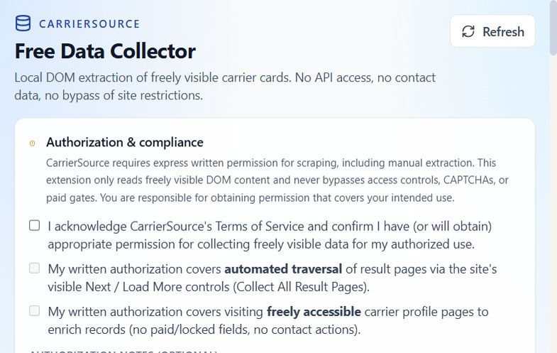
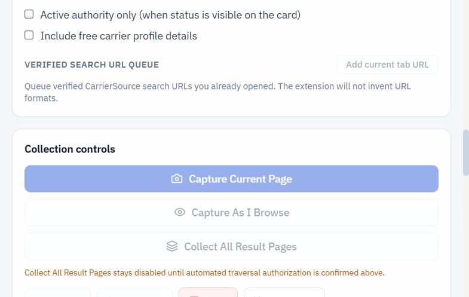
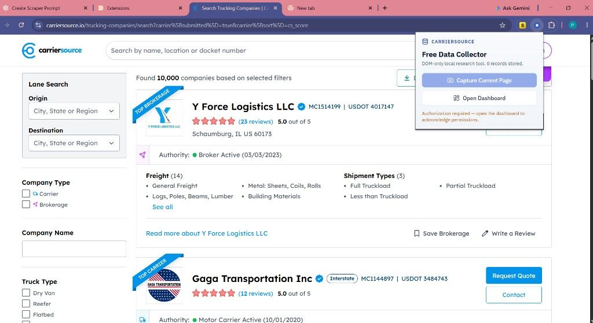
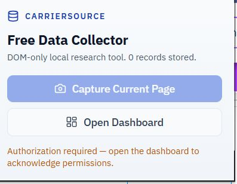
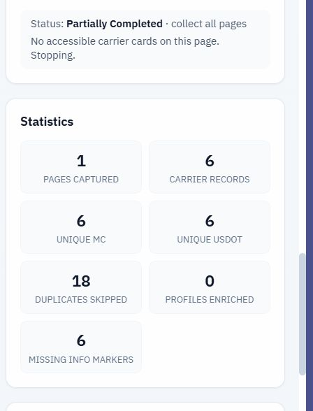
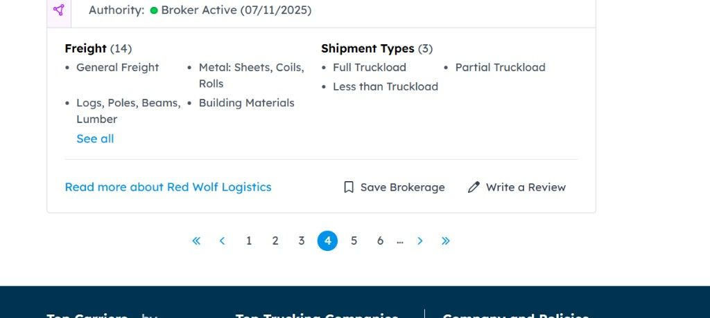

Capture Current Page
Extracts carrier cards from the results page you already have open. The popup can run this after authorization, or you can run it from the dashboard.
Chrome extension · Manifest V3 · MIT license
A local research tool for freight dispatch and carrier research. It reads carrier cards that are already visible on the page, then keeps the records in your browser.

CarrierSource Free Data Collector is an open-source Chrome extension that reads freely visible carrier cards on CarrierSource pages open in your browser and saves them locally for CSV or Excel export.
It is a Manifest V3 extension built with TypeScript, React, and Vite. It uses DOM APIs such as querySelector and MutationObserver, stores records in IndexedDB, and shows them in a side-panel dashboard. Version 1.0.3 is free under the MIT License. INDUS Web Agency publishes this page. The extension is not an official CarrierSource product, and the MIT license does not grant permission to ignore CarrierSource’s terms.
Every mode reads cards that are already on screen. Host access in the manifest is limited to carriersource.io. Chrome permissions are storage, side panel, downloads, active tab, scripting, and tabs.
Extracts carrier cards from the results page you already have open. The popup can run this after authorization, or you can run it from the dashboard.
Watches DOM and URL changes while you move through CarrierSource, and skips a result set it has already stored.
Stays disabled until you confirm written authorization for automated traversal. It then uses the visible Next or Load More control and stops when pagination is missing, repeated, disabled, or blocked.
MC numbers keep their leading zeros. An FF docket is stored separately and is never treated as an MC number. Duplicates match on the USDOT and MC set, including sponsored cards.
Download an MC-only CSV, a complete carrier CSV, a filtered CSV of the current table view, or an Excel XLSX file. CSV files include a UTF-8 BOM. Cells that look like formulas are neutralized.
A searchable equipment list and the 50 states, DC, and Nationwide tag the records you save. The queue accepts CarrierSource URLs you already opened. The extension does not invent routes.
When you authorize it, the extension can read fields shown on freely accessible profile pages. Paid or locked fields are out of scope, and contact actions are never clicked.
The side panel shows authorization, the current tab, collection controls, statistics, a results table, and export. Jobs can be paused, resumed, stopped, or reset. Data stays in IndexedDB until you clear it.
You open the CarrierSource page. The extension reads what that page is already showing. It does not reconstruct private API payloads, and if a Cloudflare or browser check appears it waits for you to complete it in the tab.
Apply filters on CarrierSource itself. The extension reads that open tab. It does not invent search URLs.
Acknowledge the terms notice. Collect All Result Pages stays disabled until you confirm written authorization for automated traversal. Profile enrichment stays off until you confirm that separate permission.
Run Capture Current Page, Capture As I Browse, or, when authorized, Collect All Result Pages. You can pause, resume, or stop. Records are deduplicated and stored in IndexedDB.
Download MC-only CSV, complete carrier CSV, filtered CSV, or Excel XLSX. Phone numbers, emails, and contact names are absent because they are never collected.

These are screenshots from the repository, captured from the extension UI and from CarrierSource pages. The statistics image is one local session, not a benchmark.




There is no Chrome Web Store listing. Install the unpacked extension from the public repository. You need Google Chrome with Manifest V3 support, Node.js 20 or newer, and a CarrierSource tab when you are ready to collect.
Clone github.com/mafzalkalwardev/carrier-source-free-data-collector and open the project folder.
With Node.js 20 or newer, run npm install, npm run icons, npm test, and npm run build. The extension output is the dist folder.
Open chrome://extensions, turn on Developer mode, choose Load unpacked, and select the dist folder.
Click the extension icon, then Open Dashboard. Authorization, collection, and export live in the side panel.
Same sequence as the project README. npm test runs the Vitest suite before the production build.
git clone https://github.com/mafzalkalwardev/carrier-source-free-data-collector.git
cd carrier-source-free-data-collector
npm install
npm run icons
npm test
npm run buildThe extension is for people who already have permission covering the CarrierSource use they intend. It organizes freely visible fields. It does not grant that permission.
Build a working list of MC and USDOT numbers from carrier cards already on screen. Equipment and state selections tag the saved records so a dispatcher can separate a dry van search from a reefer or flatbed search. Export the list as CSV or Excel and keep working from the file on your machine.
Compare freely visible equipment, authority, fleet size, safety rating, and insurance fields across carriers. When profile enrichment is authorized, free profile pages can add address, fleet breakdown, and other non-contact text the page already shows. Review body text, phone numbers, and emails stay out of the record.
Only text the page is already showing. If a field is missing on that card, the record leaves it empty. The field map in the repository is the checklist the extractor follows.
| Field | Results cards | Free profile pages |
|---|---|---|
| Company name and profile URL | Yes, when the card shows them | Yes |
| MC number | Yes, leading zeros preserved | Yes, kept separate from FF |
| FF docket | When shown, never stored as an MC | Yes, stored separately |
| USDOT | Yes | Yes |
| Equipment, freight, authority, fleet size | When the card shows them | Yes, including owned and leased counts when shown |
| Safety rating and insurance limit | When shown | Type, company, limit, and date when shown |
| Address and website | Rare on cards | Address when shown. Website only if the page displays it |
| Phone, email, contact names | Never collected | Never collected and never clicked |
| Review body text and paid or locked fields | Not collected | Not collected |
CarrierSource Free Data Collector is an open-source Chrome extension that reads freely visible carrier cards on CarrierSource pages open in your browser and saves them locally for CSV or Excel export.
No. It reads the rendered page with DOM APIs only. It does not call CarrierSource’s private API or intercept network responses.
No. Phone numbers, email addresses, and personal contact names are excluded. The extension never clicks Contact, Request Quote, Download List, or payment controls.
No. It is an independent extension published by INDUS Web Agency. It is not affiliated with, endorsed by, or operated by CarrierSource.
In IndexedDB inside Google Chrome on your computer. The project has no backend, analytics endpoint, or remote collection API.
Only after you confirm written authorization for automated traversal. It then clicks the visible Next or Load More control and waits through ordinary page loads. It does not bypass Cloudflare, CAPTCHAs, paywalls, or other access checks.
Build it from the public GitHub repository with Node.js 20 or newer, then load the dist folder as an unpacked extension on chrome://extensions. It is not distributed on the Chrome Web Store.
An MC-only CSV, a complete carrier CSV, a filtered CSV of the current table view, and an Excel XLSX workbook. CSV files include a UTF-8 byte order mark so Excel opens them as UTF-8, and cells that look like formulas are neutralized.
Freely visible fields such as company name, MC number with leading zeros preserved, FF docket stored separately from MC, USDOT, equipment, authority, fleet size, and, when you authorize it, fields shown on free profile pages. Locked, paid, and contact fields are not collected.
Freight dispatchers and carrier researchers who already have permission covering their CarrierSource use and want a local list of freely visible MC and USDOT records.